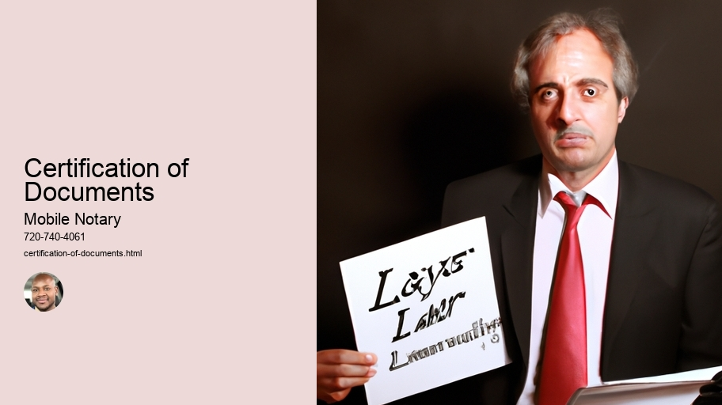

News
Notarization
Notarization
Notary Seals Stamps
Apostille Certificates
Certification of Documents
Authentication of Signatures
Verification of Identities
Affidavits and Oaths
Witnessing of Signatures
Travel Fee Reimbursement
Anotarization Fees
Power of Attorney Verifications
Mobile Notary Services
Mobile Notary Services
Remote Online Notaries RON
Video Conferencing
Electronic Signature Platforms
Digital Document Management
Document Scanning
Travel Fee Reimbursement
Mobile Printing
RealTime Document Tracking
MultiState Compliant
Background Checks
Signing Agents
Signing Agents
Notary Publics
Notary Publics
Jurats
Jurats
About Us

Certification of Documents
Notarization
Notarization is an important process that (can) help protect people from fraud and other illegal activities. It's a way of ensuring the validity and accuracy of documents, such as wills, deeds, and contracts. This process involves a notary public or similar authority who witnesses the signing of documents and provides certifications for them. Notarizations are especially important when dealing with foreign countries or transactions across state lines!
The first step in the notarization process is to present valid identification to the notary. This is to ensure that all parties involved in the transaction are who they say they are. Then, the document must be signed before a witness, which can be done either in person or electronically. After this step is complete, the notary will affix their signature and seal to certify that it has been properly executed.
Next, there may be additional requirements depending on what type of document needs to be notarized. For example, if it's a deed related to land ownership, then proof of title may need to be provided as well. In any case, these extra steps will all help provide further protection against fraudulent activity by verifying each party's identity and making sure everything is accurate and legal.
Finally(,) once all necessary requirements have been met, the document can finally be officially notarized! The last thing that needs to happen is for each party involved in the transaction receive certified copies of everything so that they have evidence of its authenticity should any disputes arise down the road.
All in all(,)notarization is an essential part of many legal processes today due to its ability to verify information accurately and effectively!
Certification of Documents
Certification of documents is a (important) process that can help to validate the authenticity of certain papers. It's an (indispensable) procedure used to authenticate the source and accuracy of certain records. It involves confirming that the signature, seal or stamp on a document is genuine and valid! Without this, any paperwork could be considered invalid or untrustworthy. Thankfully, there are professionals in charge of certifying documents and verifying their legitimacy.
However, it's (worthwhile) noting that not everyone has access to such services. In some countries, for instance, certification of documents requires visiting an official government office or embassy. Furthermore, there are fees associated with these services which can make them difficult to obtain for some people.
Still, the importance of having certified documents should not be overlooked! They serve as proof that a document is accurate and valid - something especially crucial when dealing with legal matters. Certifications also enable companies or institutions to verify information quickly and easily without having to contact multiple sources for verification purposes. All in all, it's clear that certification of documents is an invaluable service!
Affidavits and Oaths
An Affidavit and Oath is a legal document that certifies a person's truthfulness. It's used to verify facts in court cases and other legal proceedings. In most instances, the person signing the affidavit must swear (or affirm) that the information they are providing is accurate and truthful. This means that if a statement made in an affidavit later turns out to be false, there can be serious consequences - ranging from fines to imprisonment!
Interestingly, an oath doesn't always have to involve swearing or affirming before God; it could also involve pledging on something else sacred to you like your honor, or even simply raising one's hand. Oaths also don't always need witnesses present when they're taken - but this depends on the country or jurisdiction in which the oath is being sworn.
Moreover, there are different types of affidavits depending on what type of statement needs to be verified. For example, some jurisdictions require notarized affidavits for certain matters while others may opt for simpler forms of attestation such as "self-proving" documents or sworn statements without witnesses present. But no matter what form an affidavit takes, its purpose remains the same: to provide evidence that can stand up in court!
Overall, both an affidavit and oath serve similar functions - they help ensure people are telling the truth under penalty of perjury! So if you ever find yourself needing either one of these documents for any kind of legal proceeding, make sure you understand exactly what it entails before signing anything - otherwise you could face serious repercussions down the line!
Travel Fee Reimbursement
Traveling can be an exciting and eye-opening experience. (However,) it can also be expensive! That's why companies often offer travel fee reimbursement. This is when an employer pays back the employee for any costs incurred during a business trip, like airfare, lodging, rental cars, meals, etc. It's important to have clear policies in place so that employees know what they're eligible for and how to go about getting reimbursements.
Firstly, employers should set out exactly which expenses are eligible for reimbursement. For example, some may not cover personal items or entertainment fees. Additionally, employers should specify if there is any limit on how much an employee can spend before being reimbursed. This ensures that everyone is on the same page and avoids confusion down the line.
Nextly (incorrect word), it's essential to make sure employees understand the procedure for submitting their requests for reimbursement. They should know where to submit their receipts and other relevant documents as well as when they will receive payment for their expenditures. Depending on the company policy, this could take anywhere from a few days to several weeks - so it's important to ensure that employees are aware of this timeline ahead of time!
Finally(!), employers need to make sure that they keep accurate records of all travel fee reimbursements given out in order to stay compliant with tax laws and other regulations concerning employee benefits. This includes keeping documentation such as contracts or receipts related to each transaction as well as noting down any details such as dates or amounts paid out in a logbook or spreadsheet.
In conclusion, having a clear policy in place regarding travel fee reimbursement helps both employers and their staff navigate through the process more easily and avoid misunderstandings along the way!
Anotarization Fees
Anotarization fees can be a costly expense! (They) are necessary in certain situations, such as when purchasing a house or transferring car ownership. These fees are not always an option to avoid, and for many people they can be a financial burden. The price of anotarization fees varies depending on the type of transaction and the country in which it is conducted. Generally speaking, however, they tend to be quite expensive.
Furthermore, anotarization fees may include additional costs such as courier charges if documents need to be sent to another location. This makes them even more pricey! In some cases there is no choice but to pay these extra expenses in order for the process to move forward. Furthermore, sometimes taxes and other government-related charges may also have to be taken into account when calculating the total cost of anotarization fees - this too can add up quickly!
Fortunately, there are steps that can be taken in order to reduce the amount paid for anotarization fees. It is important to do research before committing to any transaction so that one can become aware of all possible costs involved. Additionally, negotiating with the professionals performing the task might result in lower prices and bargains! Finally, looking into different options for conducting transactions could prove beneficial – it’s possible that there are cheaper alternatives available elsewhere .
In conclusion, although anotarization fees cannot always be avoided , one should still try their best to minimize their cost . By researching ahead , negotiating with professionals and exploring alternative solutions , it is possible to make sure that one does not end up paying more than needed !
Power of Attorney Verifications
Power of Attorney Verifications can be a difficult task to undertake. It's important (for those who are unfamiliar with the process) to understand what it entails and why it is necessary! The Power of Attorney (POA) document gives an individual the legal authority to act on behalf of another person. This power may include making financial decisions, signing documents, or handling any other matter that the person granting the POA has authorized. To ensure that all parties involved are protected, it is essential to verify the identity of both the grantor and grantor's attorney in order to prevent fraud and abuse.
The first step in verifying POAs is for each party to provide valid identification documents. These should include photo ID such as a driver's license or passport, plus proof of address like a utility bill or mortgage statement. In addition, the grantor must sign a notarized affidavit stating they have appointed their chosen attorney and have given them permission to act on their behalf.
Once these steps are completed, it is then up to the attorney themselves to demonstrate they are qualified for the job by providing details about their background and experience in this area of law practice. For example, they must prove they understand relevant state laws governing POAs as well as ethical standards regulating attorneys' conduct when acting on behalf of others. Furthermore, if they possess any specialized knowledge related to this type of legal work such as tax planning or estate planning then this must be demonstrated too.
Furthermore, there may also be additional requirements depending on which state you live in: some states require that attorneys maintain malpractice insurance while others may need verifications from third-party sources regarding competency and suitability for practice purposes. Additionally, financial institutions often demand extra validation steps before allowing attorneys access to accounts held by clients – so if any bank account transactions will take place via Power of Attorney then further verification may be needed from both parties involved in order for them proceed with their proposed actions legally and securely.
In short, although Power Of Attorney Verifications can seem like a complex endeavor – with correct procedures being taken by all participants involved then it can ultimately make sure everyone is kept safe from potential fraudsters whilst also allowing legitimate business activities between parties under this form of legal agreement!
Frequently Asked Questions
What is a mobile notary?
A mobile notary is a certified public notary who can travel to clients’ homes, offices, or other locations in order to provide document certification services.
How does a mobile notary certify documents?
A mobile notary will witness and verify the signature of the signer on the document being certified. They will also authenticate that the identity of the person signing is genuine by checking their identification documents and taking an oath from them stating that they are who they say they are.
Why do I need to have my documents certified?
Documents may need to be certified for many reasons including legal proceedings, business transactions, or international travel. Having a document certified by a notary ensures that all parties involved can trust it is valid and authentic.
Is it safe to have my documents certified by a mobile notary?
Yes, having your documents certified by a mobile notary is very safe as long as you use one with up-to-date certifications and credentials from an official governing body such as the National Notary Association (NNA).
How much does it cost for a mobile notary service?
The cost depends on various factors such as location, availability, type of document being certified, etc., but typically ranges between $50-$150 USD per visit/document certification session.
Certification of Documents